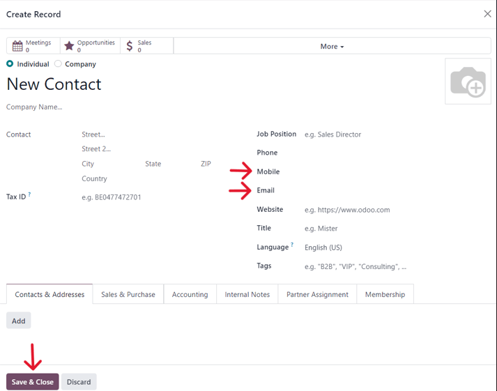
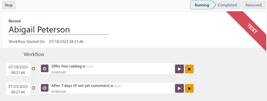
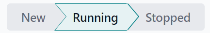
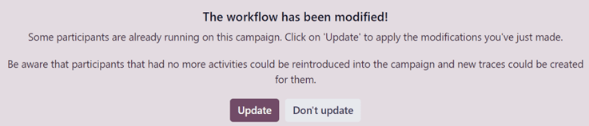
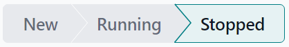

Testing/running campaigns¶
The Odoo Marketing Automation app allows users to test marketing campaigns (and mailings) before officially running them to check for errors and correct any mistakes before it reaches its target audience.
Test campaigns¶
To test a marketing campaign, open the , and select the desired campaign to test, which reveals the campaign’s detail form.
On the campaign detail form, make sure the campaign already has activities configured in the workflow (or build a campaign by following the directions on this documentation).
Note
Testing marketing automation campaigns is meant to be performed in the production version of the database. Duplicate (or trial) databases have limited email sending capabilities.
To start a test, click the Launch a Test button at the top of the campaign form, to the right of the Start button.

When clicked, a Launch a test pop-up window appears.

In the Launch a test pop-up window, click the Pick or create a/an Contact to generate a Test Participant field to reveal a drop-down menu of contacts. From this drop-down menu, select an existing contact (or create a new one) to run the test on.
Note
Only one contact can be selected from the Launch a test pop-up window.
To create a new contact directly from the Launch a test pop-up window, start typing the name of the new contact in the blank field, and click Create and edit….

Doing so reveals a blank Create Record pop-up form, in which the necessary contact information (Email, Mobile, etc.) must be entered, in order for the test to work. When the necessary information is entered, click Save & Close.
When all the necessary fields have been entered, click Save & Close to return to the Launch a test pop-up window.
Once a contact is selected, click Launch to reveal the campaign test page.
On the campaign test page, the name of the Record being tested is visible, along with the precise time this test workflow was started in the Workflow Started On field. Beneath that, in the Workflow section is the first activity (or activities) in the workflow that’s being tested.
To start a test, click the Run button, represented by a ▶️ (play button) icon beside the first activity in the workflow. When clicked, the page reloads, and Odoo shows the various results (and analytics) connected to that specific activity as they occur, in real-time.
Note
If a child activity is scheduled beneath a parent activity, that child activity will be revealed slightly indented in the workflow, once that parent activity has been run, via the ▶️ (play button) icon.

Once all the workflow activities are completed, the test ends, and the status bar (in the upper-right corner) moves to the Completed stage.
To stop a test before all the workflow activities are completed, click the Stop button in the upper-left corner of the campaign test page.
Run campaigns¶
To run a campaign, navigate to , and select the desired campaign to run.
On the campaign detail form, with all the desired activities ready in the Workflow section, click Start in the upper-left corner to officially run the campaign to the configured target audience specified on the campaign detail form.
Clicking Start launches the campaign, and the status bar of the campaign switches to Running, which is located in the upper-right corner of the campaign detail form.
Note
If some participants are already running on a campaign, and was stopped for any reason, clicking the Start button again prompts a pop-up warning. This warning advises the user to click an Update button to apply any modifications made to the campaign.
Be aware that participants that had already gone through an entire campaign in its original state can be reintroduced into the newly-modified campaign, and new traces could be created for them.
Then, as the mailings and actions are triggered in the Workflow, the various stats and data related to each activity appear in each activity block. There is also a series of stat-related smart buttons that appear at the top of the campaign detail form, as well.
These analytical smart buttons will also populate with real-time data as the campaign progresses: Templates, Clicks, Tests, Participants.

Stop campaigns¶
To stop a campaign that’s currently running, navigate to the , and select the desired campaign to stop. On the campaign detail form, click the Stop button in the upper-left corner.
When clicked, the campaign is officially stopped, and the status changes to Stopped in the upper-right corner of the campaign detail form.
